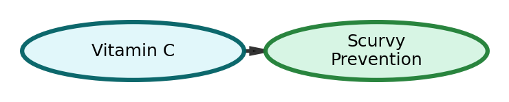

How we lost and rediscovered the cure, told in three causal models.
Scurvy devastated sailors on long voyages: weakness, bleeding gums, and death. In 1747, James Lind showed that lemons prevented scurvy, a correct finding, but the reason was unknown. Later, people decided it was acid killing the "bacteria" that caused scurvy. That wrong belief led to replacing lemons with limes or vinegar, and scurvy returned. Only in 1928 was the true cause found: vitamin C (ascorbic acid). The three directed acyclic graphs below show how the assumed data-generating process changed over time.
Lind's experiment showed that lemons prevented scurvy. The causal view was simply: lemons → scurvy prevention. Correct as far as it went, but the mechanism was missing.
People came to believe acid killed the bacteria that caused scurvy. The assumed chain was: acid → bacteria death → scurvy prevention. That misunderstanding led to dropping lemons for cheaper acids and brought scurvy back.
In 1928 the real mechanism was identified: vitamin C prevents scurvy. That explains why lemons worked (they contain vitamin C) and why the acid-only story failed.
